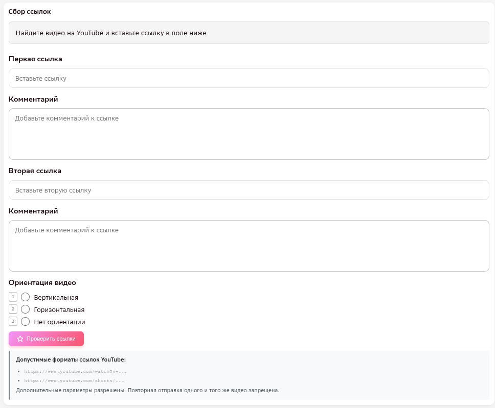

ТИП ЗАДАНИЯ
Последовательное видео / два отдельных видео
Два формата, не являющихся коллажем: (а) одно видео, где «до» и «после» идут последовательно в одном ролике, (б) два отдельных видео — одно «до», другое «после». Доступно в двух пулах — YouTube и Vimeo; правила одни и те же, различается только формат самой ссылки (см. ниже). Обновлено инструкцией от 02.11.2026. Общие для всех типов задания критерии (длительность, человек в кадре, повторы, ИИ и т. п.) — на странице «Критерии отбора видео».
Если «до» и «после» показаны одновременно на одном кадре (разделённый экран, split screen) — это коллаж, и его нужно собирать в другом пуле, см. «Видеоколлаж». Здесь принимаются только видео, где «до» и «после» идут одно за другим по времени (в одном ролике или в двух разных).
ИНТЕРФЕЙС
Формат ссылки и поля задания
Открывая задание, вы видите поля для двух ссылок (у каждой — своё поле комментария) и кнопку проверки. Заполняете одну или обе ссылки — зависит от формата видео:
| Формат видео | Ссылок | Комментарий |
|---|---|---|
| 🎬 Одно видео, «до» и «после» последовательно | 1 (первая) | Обязателен — точный тайм-код обоих отрезков |
| 2️⃣ Два отдельных видео — «до» и «после» по разным ссылкам | 2 (обе) | Обязателен в обоих полях — точный тайм-код в каждом |
Будь то одна ссылка на последовательное видео или две ссылки на отдельные видео — в сумме это одно задание из 1000 нужных видео. Ориентация для этого типа задания не отмечается — чекбокса «вертикальная/горизонтальная» здесь нет, это не коллаж.

| Поле | Что вносим |
|---|---|
| Первая / вторая ссылка |
Первая ссылка — заполняется всегда: сюда идёт ссылка на последовательное видео 🎬, либо на видео «до» — если формат 2️⃣ «два отдельных видео». 2️⃣ Вторая ссылка — только для формата «два отдельных видео» (видео «после»); для последовательного видео остаётся пустой. Формат адреса зависит от пула:
Для каждой ссылки: обязательно HD (1280×720), хорошее качество картинки (не только цифры разрешения), оба видео — одинакового качества между собой. |
| Комментарий | У каждой ссылки — своё поле комментария, обязательное для обоих форматов: нужно указать точный тайм-код, на котором происходит идентичное движение (например, «10–12 сек» и «20–22 сек» для одного видео с обоими отрезками, или свой тайм-код в комментарии к каждой из двух ссылок). Важно: тайм-код указывается максимально точно — лишние секунды до/после движения в диапазон не включаются. |
| «Проверить ссылку» | Проверяет точное совпадение каждой заполненной ссылки — не была ли уже добавлена именно она. Если да — задание не отправится, нужно подставить другую ссылку. |
КРИТЕРИИ
Критерии, специфичные для этого типа задания
Остальные критерии (длительность, активность, различимость и т. п.) — общие, см. «Критерии отбора видео».
| Параметр | Подходит | Не подходит |
|---|---|---|
| Несколько человек в кадре | ✅ Допустимо, если несколько людей на одном плане — при условии: (а) они выполняют идентичные движения по отдельности, либо (б) это парное/групповое движение в связке (например, танец вдвоём) — тогда сравнивается идентичность не каждого человека отдельно, а пары/группы в целом (инструкция от 02.11.2026). | ❌ Несколько человек на одном плане выполняют разные, несогласованные движения, не образующие пару/группу. |
На видео есть сегмент движения с применением эффектов с 10 по 12 секунды (после 12 секунды человек слишком маленький), затем идёт фрагмент с тем же движением с 20 по 22 секунды.
На первом видео показаны кадры со съёмок на фоне зелёного экрана. Действие происходит в пределах с 42 по 46 секунды.
На втором видео показаны кадры из фильма, где то же действие происходит в пределах с 32 по 35 секунды.
ПРИМЕРЫ
Разбор примеров из инструкции (02.11.2026)
Пять примеров из обновлённой инструкции — с видео и вердиктом.
Видео длится менее 30 минут, идентичное движение происходит в пределах с 7 по 13 секунды (после применения эффекта) и с 27 по 32 секунды (до применения эффекта), ни один из фрагментов не перекрывается предметами или наложениями — движение от 5 секунд без артефактов, видео подходит.
❗ В комментарии нужно указать оба диапазона: 7–13 сек (после эффекта) и 27–32 сек (до эффекта).
Видео длится менее 30 минут, идентичное движение происходит в пределах с 10 по 16 секунды (после применения эффекта) и с 19 по 27 секунды (до применения эффекта), человек виден полностью и ничем не перекрыт — движение от 5 секунд, видео подходит.
❗ В комментарии нужно указать оба диапазона: 10–16 сек (после эффекта) и 19–27 сек (до эффекта).
На 10 секунде человек виден издалека, его масштаб слишком маленький, голова обрезана по брови (недопустимо); человек виден полностью только с 12 секунды, а движение заканчивается на 13-й — действие длится менее 2 секунд, масштаб человека маленький, видео не подходит.
Видео длится менее 30 минут, но применение эффектов показано с помощью коллажа (например, на 3:08) — такое видео для этого типа задания не подходит (см. «Видеоколлаж»).
Видео слева после применения эффекта считается частью коллажа — такое видео для этого типа задания не подходит (см. «Видеоколлаж»).
ПЕРЕД ОТПРАВКОЙ
Проверьте себя
- Ссылка (или обе ссылки) ведёт на видео в разрешении HD (1280×720) и не длиннее 30 минут — и картинка в целом хорошего качества, не смазанная.
- В комментарии к каждой ссылке указан точный тайм-код идентичного движения.
- Нажата кнопка «Проверить ссылку» для каждой заполненной ссылки, чтобы исключить дубли.
- Видео — не коллаж: «до» и «после» не показаны одновременно на разделённом экране.
- Движение выполняет человек, млекопитающее или антропоморфное существо (прямоходящее, с глазами и конечностями как у человека), а не неживое.
- Движение активное — не просто стоит, сидит, покачивается или идёт.
- Движение целиком, без склеек — завершено и идентично между «до» и «после».
- Если несколько человек на одном плане — движения идентичны по отдельности, либо это парное/групповое движение в связке.
- Видео не сгенерировано нейросетью и не является мультипликацией/анимацией.
- Такое движение ещё не собиралось в проекте.
- В ролике нет сцен курения, алкоголя, запрещённых веществ, насилия (кроме постановочных драк) и т. п.